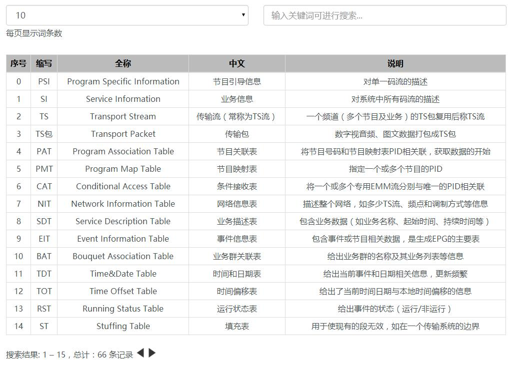

PSI/SI资料快查
资料入口

这里是PSI/SI相关资料的主入口， 你有任何需要查询的资料，都可以从这里开始寻找...
版权声明：未经许可，请勿转载！
©2016 · OneLib智库 · 分享知识和经验，打造精品智库平台
PSI/SI教程
如果你是PSI/SI的初学者， 那么就让一切都从这里开始吧...
资料快查
您可以输入关键词以搜索您要的资料
资料向导
概括本资料集的结构和内容
PSI/SI名词速查
林晓州 于 2016年02月22日 发布
这里将PSI/SI相关的所有名词都列出，并给出了中英文两个版本以供参考。
TS流的制作、传输及解析
林晓州 于 2016年02月23日 发布
本章将介绍TS流是如何制作，其传输系统有哪些，是如何接收的。